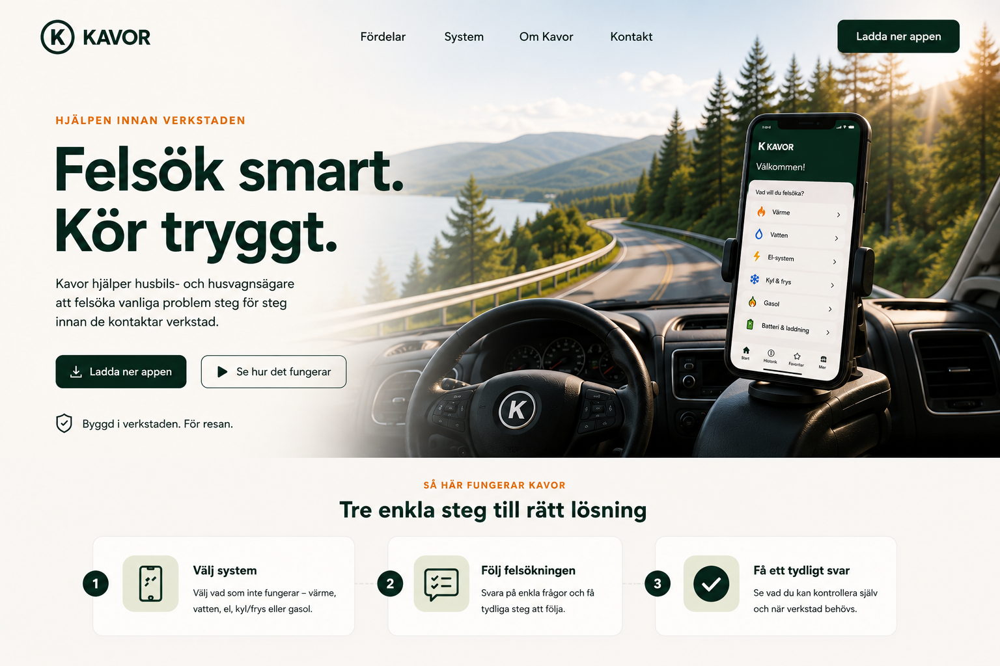
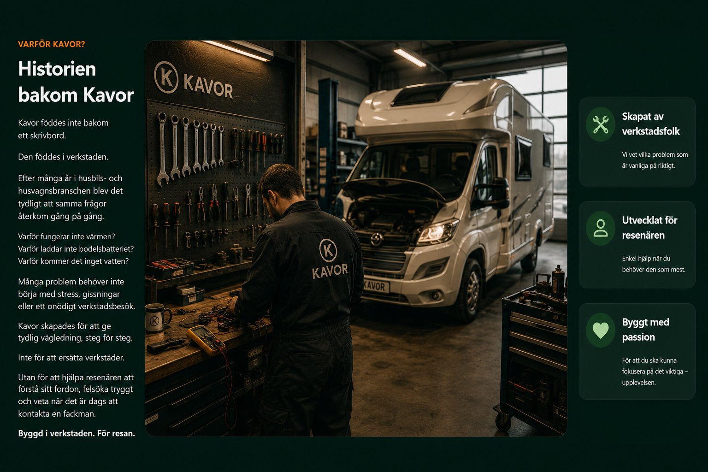

Förklarar på vanligt språk
Kavor översätter tekniska problem till tydliga frågor och enkla förklaringar.

VARFÖR KAVOR?
Kavor föddes inte bakom ett skrivbord.
Den föddes i verkstaden.
Efter många år i husbils- och husvagnsbranschen blev det tydligt att samma frågor återkom gång på gång.
Varför fungerar inte värmen?
Varför laddar inte bodelsbatteriet?
Varför kommer det inget vatten?
Många problem behöver inte börja med stress, gissningar eller ett onödigt verkstadsbesök.
Kavor skapades för att ge tydlig vägledning, steg för steg.
Inte för att ersätta verkstäder.
Utan för att hjälpa resenären att förstå sitt fordon, felsöka tryggt och veta när det är dags att kontakta en fackman.
Byggd i verkstaden. För resan.
Läs historien bakom Kavor
Tre huvudfördelar
Kavor översätter tekniska problem till tydliga frågor och enkla förklaringar.
Appen fokuserar på säkra, enkla kontroller och hjälper användaren att samla rätt information.
Riskmoment och osäkra fel hänvisas vidare till verkstad eller behörig tekniker.
Kommer snart
Vill du testa appen eller veta mer?
Kontakta: kavor.appinfo@gmail.com